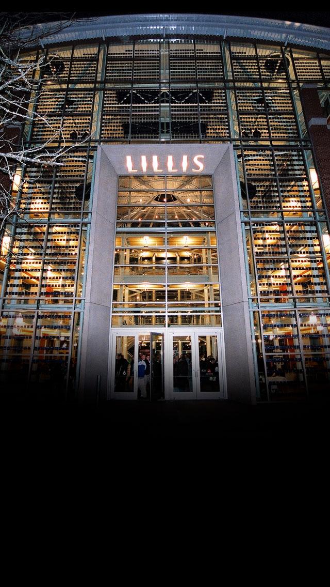
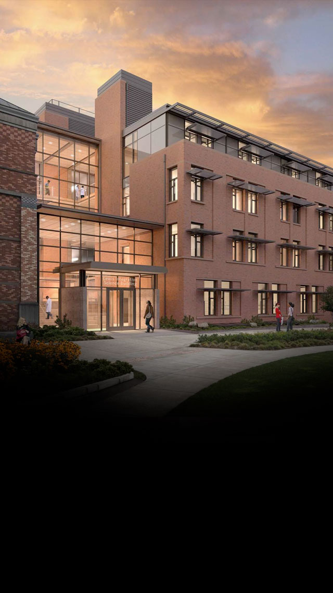
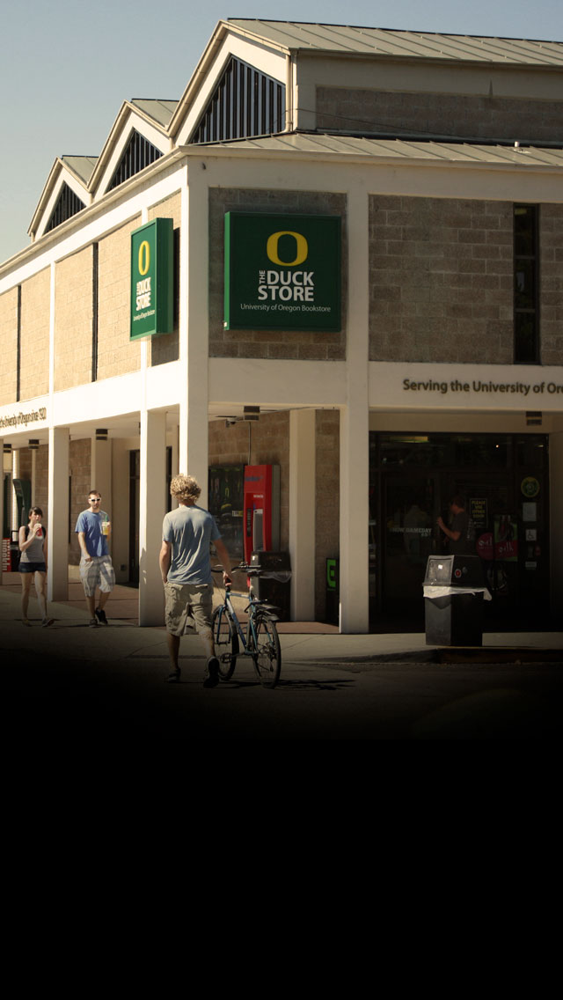

The EMU has been the gathering place for campus activities and student life since 1950.

LILLIS Business Complex
Lillis Hall opened in 2003 and was architecturally designed to facilitate and encourage interaction between students and faculty, and to maximize educational resources.

Lewis Integrative Science Building
Building on a proud tradition of interdisciplinary research at the University of Oregon, the Robert and Beverly Lewis Integrative Science Building is home to strategic research clusters integrative research missions that cannot be defined by departmental boundaries.
Jaqua Academic Center
Built in 2010, the John E. Jaqua Center is a 40,000 square foot, state-of-the-art academic learning center that accommodates student athletes here at the University of Oregon.

Duck Store
Located just off campus on 13th Street, the Duck Store is where you’ll find everything from textbooks to Duck gear to a quick snack.